Intelligent Vehicles: Operations and Control
Overview
Intelligent vehicles—including connected vehicles (CVs), automated vehicles (AVs), and connected and automated vehicles (CAVs)—are increasingly becoming part of human society and everyday mobility. How to operate and control these vehicles so that they can safely, efficiently, and harmoniously integrate into human society and existing transportation systems is therefore a critical challenge. Addressing this challenge requires not only reliable control of individual vehicles, but also effective cooperation among vehicles, safe interaction with human drivers, and coordinated management of mixed traffic at the traffic-stream and network levels.
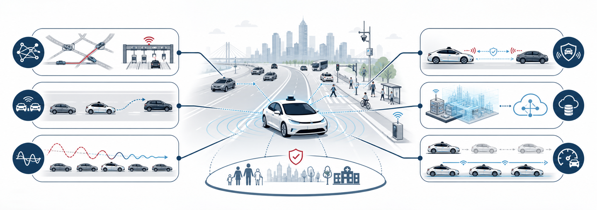
To address these challenges, we have conducted a systematic program of research from the following complementary perspectives:
- Mixed-Traffic Stabilization and Cooperative Control: The penetration rate, spatial distribution, and information structure of connected vehicles jointly determine whether disturbances grow or dissipate in heterogeneous traffic. We established a systematic modeling and control framework spanning unified car-following and distributed feedback control[1], local and global cooperative driving strategies[2], and generalized string-stability analysis[3].
- Communication-Aware Traffic Behavior and Safety: V2V information introduces new pathways for disturbance propagation and new safety–efficiency trade-offs that conventional traffic models cannot fully capture. We developed a speed-perturbation model to quantify the relative effects of communication and car-following behavior[4], together with a safety rule-based cellular automaton model incorporating bidirectional information and heterogeneous driver sensitivity[5].
- Cooperative Maneuver Planning and Digital Infrastructure: Conventional lane-changing methods often optimize only the subject vehicle, while limited on-board sensing constrains their ability to account for surrounding traffic. We developed a multi-agent trajectory-planning method that jointly optimizes interacting vehicles[6], and a digital-twin-empowered mobile edge computing architecture that supports foresight-informed lane-changing decisions[7].
- Adaptive Longitudinal and Platoon Control: Because intelligent vehicles are randomly distributed and platoons form only temporarily, real-world controllers must adapt to changing vehicle compositions and traffic conditions. We developed a unified adaptive car-following framework that switches between individual and platoon control[8], and a deep-reinforcement-learning strategy for dynamically organizing connected, automated, and human-driven vehicles into hybrid platoons[9].
- Network-Level Traffic Management: Although CAVs can increase road capacity, their benefits may be substantially weakened when they share the road with human-driven vehicles, making effective management of mixed traffic essential. We developed a multiclass traffic-assignment model with elastic demand and corresponding optimal-toll algorithms to regulate access to autonomous-vehicle/toll lanes and improve network performance[10].
- System Evidence and Communication Infrastructure: We synthesized assumptions, models, and evidence on how automated vehicles affect traffic-flow efficiency, stability, and safety across penetration scenarios[11]. At the supporting-network level, we developed deep-learning-enabled traffic offloading for software-defined cellular V2X networks[12] and energy-efficient channel and power allocation for priority-sensitive vehicular mobile-health communications[13].
Publications


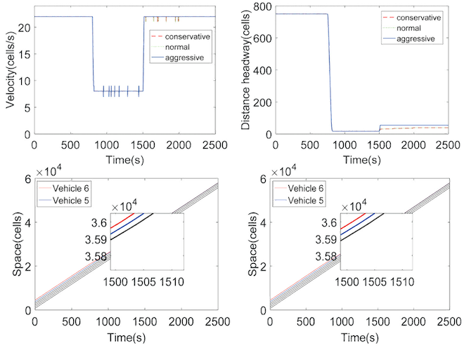
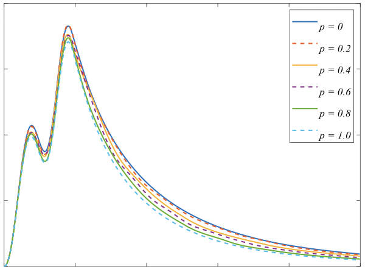
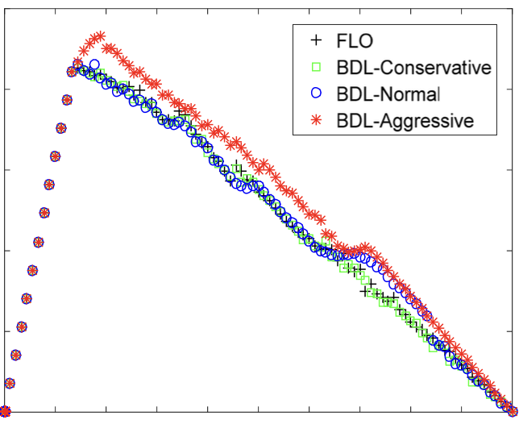
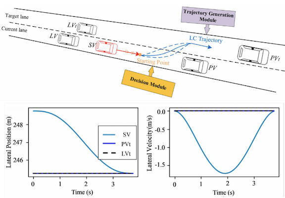
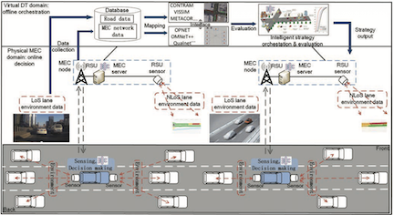
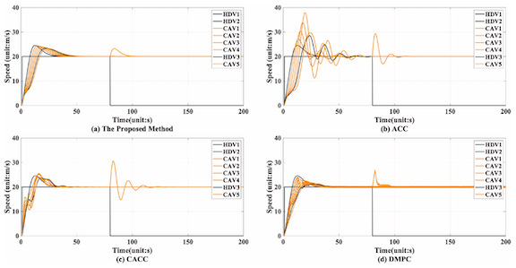
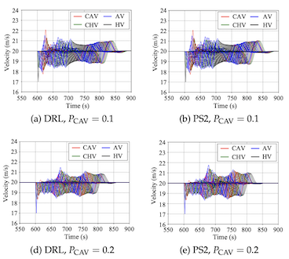
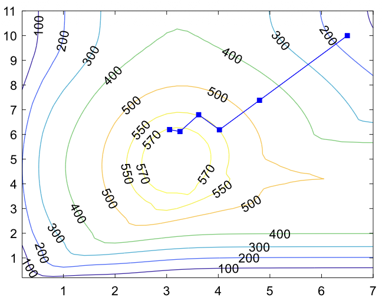
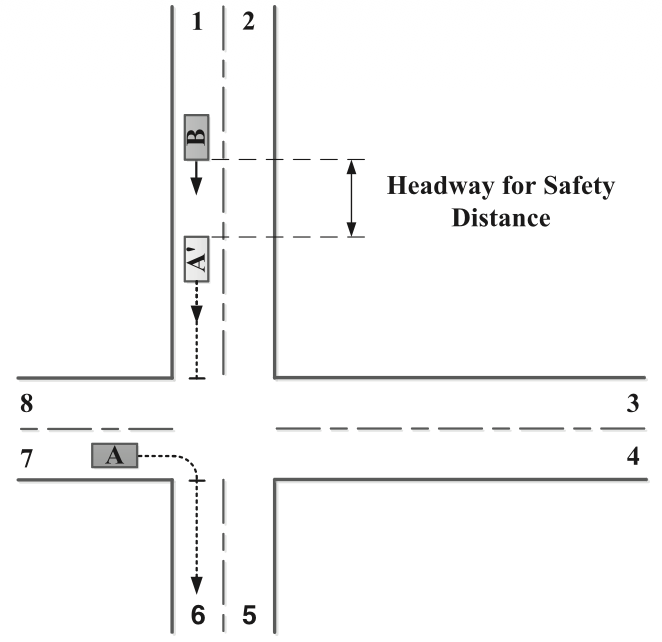
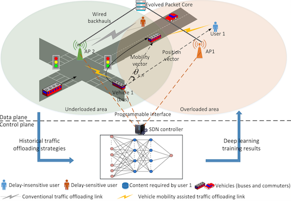
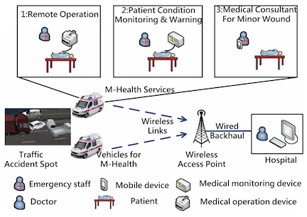